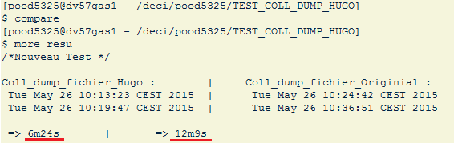
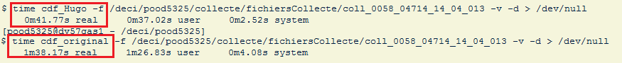
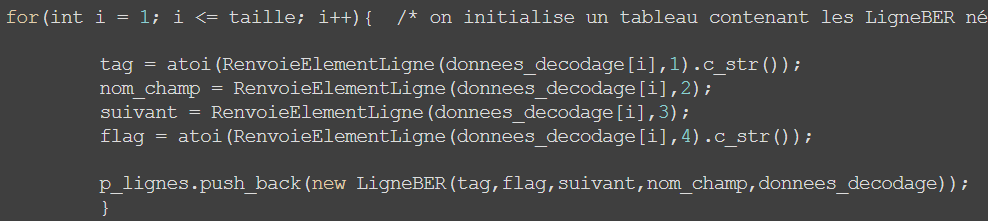
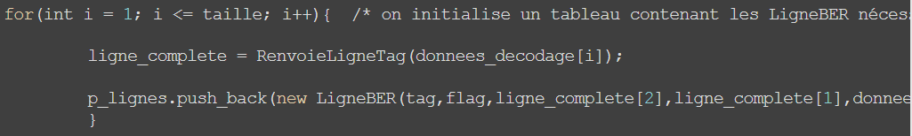

Présentation
Hugo GYBELS
Stage paramétrage - Coll Dump FichierSommaire
- Contexte
- L'outil Coll Dump Fichier
- Travaux réalisés
- Enseignements
Contexte
Etudes
DUT GEII - IUT Saint-Etienne
Ecole d'ingénieur - Telecom Saint-Etienne
Orange

La Direction Réseau (DR)
Exploitation, supervision et expertise des réeaux.
Direction Comptage :
- Collecter les données du réseau
- Mettre en forme les données
- Les redistribuer (facturation, statistique, etc.)
Platine :
Direction Comptage :
- Exploitation
- Expertise
- Paramétrage
Coll Dump Fichier
Utilisation
Missions du stage
Passage au C++ :
- Perte de performance
- Beaucoup de développeurs mais peu de documentation
Travaux Réalisés
1- Optimisation de l'outil :
Localiser la perte de performances
- Scripts linux : 
- Commande time : 
- Bibliothèque ctime :
Codes redondants
- 
- 
Dans le décodage :
//Décodage du DC :
nb_champs = tab_champs->RenvoieTabChamps().size();
EnteteBER * entete_ber = new EnteteBER(p_ligneNUM);
for(int i = 0; i < nb_champs; i++){
tag = tab_champs->RenvoieTabChamps()[i]->RenvoieTag();
if(tag == entete_ber->RenvoieTag()){ /* si le tag recherché est trouvé */
/* on récupère les éléments du champ BER */
nom_champ = tab_champs->RenvoieTabChamps()[i]->RenvoieNomChamp();
decodage = tab_champs->RenvoieTabChamps()[i]->RenvoieDecodage();
decalage = tab_champs->RenvoieTabChamps()[i]->RenvoieDecalage();
tab_suivant = tab_champs->RenvoieTabChamps()[i]->RenvoieTabChamps();
flag = tab_champs->RenvoieTabChamps()[i]->RenvoieFlag();
}
...
//Décodage du DC :
vector < ChampBER *> champs = tab_champs->RenvoieTabChamps();
nb_champs = champs.size();
int tag_entete = entete_ber->RenvoieTag();
EnteteBER * entete_ber = new EnteteBER(p_ligneNUM);
for(int i = 0; i < nb_champs; i++){
tag = champs[i] -> RenvoieTag();
if(tag == tag_entete){ /* si le tag recherché est trouvé */
/* on récupère les éléments du champ BER */
nom_champ = champs[i]->RenvoieNomChamp();
decodage = champs[i]->RenvoieDecodage();
decalage = champs[i]->RenvoieDecalage();
tab_suivant = champs[i]->RenvoieTabChamps();
flag = champs[i]->RenvoieFlag();
}
...
Resultats Obtenus
50% du temps d'exécution
Objectif n°1 atteint.
2- Ecriture de la documentation :
- Présentation
- Utilisation
- Fonctionnement
- Maintenance
Doxygen
Enseignements
- Interaction fichiers C++
- Gestion de configuration
- Nouveaux logiciels :
- Nouvel IDE
- Déboger gdb
- Fuites mémoires valgrind
- HTML et CSS
- Rapport : LaTeX, documentation : Doxygen,
présentation : Reveal.js
Apports Personnels
- Connaissance du monde de l'entreprise
- Travail en équipe
- Communication
- Autonomie
- Organisation